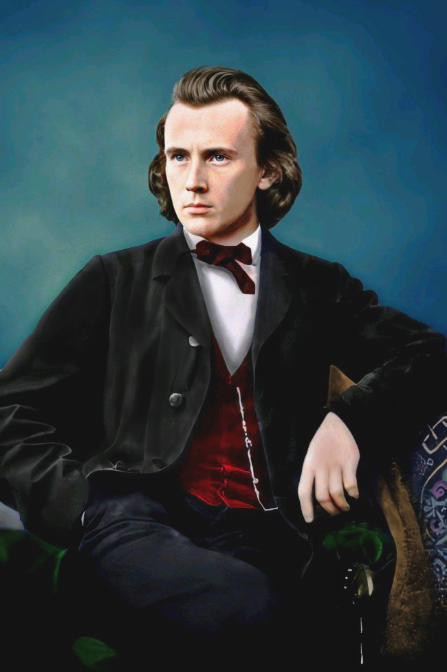
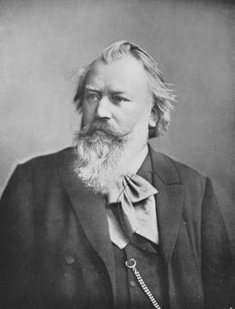
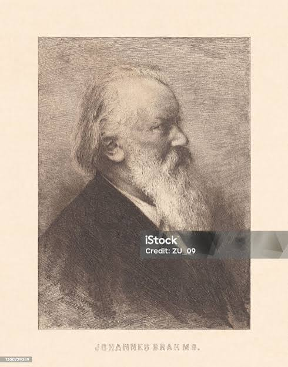

Автобиография Иоганнеса Брамса
 Иоганнес Брамс в зрелые годы (ок. 1893 г.)
Иоганнес Брамс в зрелые годы (ок. 1893 г.)
Иоганнес Брамс — выдающийся немецкий композитор, пианист и дирижер XIX века, один из ключевых представителей эпохи романтизма. Наряду с Иоганном Себастьяном Бахом и Людвигом ван Бетховеном он входит в так называемую великую тройку немецких композиторов, известную как «Три Б».
Ранние годы и детство в Гамбурге
Иоганнес родился 7 мая 1833 года в бедной семье в портовом городе Гамбурге. Его отец, Иоганн Якоб Брамс, был музыкантом-исполнителем на контрабасе и валторне, а мать, Кристина Ниссен, работала швеей. Семья жила скромно в южной части города.
Заметив у мальчика редкий музыкальный слух, отец с 7 лет отдал его обучению игре на фортепиано к учителю Отто Косселю. Чтобы помогать семье финансово, юному Иоганнесу уже с 12-13 лет приходилось вечерами и ночами играть на фортепиано в трактирах, портовых танцевальных залах и матросских кабачках. Несмотря на тяжелый труд, он находил время читать книги и изучать произведения Баха и Бетховена.

Молодой Брамс (1853 г., 20 лет)Встреча с Робертом и Кларой Шуман
Переломным моментом в жизни Брамса стал 1853 год. Находясь в гастрольной поездке с венгерским скрипачом Эде Ременьи, Брамс познакомился с великим композитором Робертом Шуманом и его женой, гениальной пианисткой Кларой Шуман.
Шуман был поражен глубиной сочинений 20-летнего музыканта. Он написал историческую статью в Лейпцигской музыкальной газете под названием «Новые пути», где объявил Брамса «избранником», которому суждено высказать идеальное выражение эпохи. Это принесло молодому автору мгновенную известность в профессиональных кругах.
Когда Роберт Шуман тяжело заболел, Брамс остался рядом с семейством Шуман, помогая Кларе ухаживать за детьми. Дружба и глубокая привязанность к Кларе Шуман сохранились у Брамса на всю оставшуюся жизнь.
Венский период и мировая слава
В 1862 году Брамс впервые приехал в Вену — музыкальную столицу Европы. Вена настолько очаровала его, что вскоре он переехал туда на постоянное жительство. Вене Брамс посвятил более 30 лет своей жизни.

Брамс в поздний период жизни (1891 г.)Здесь он руководил венской Певческой академией, проводил концерты и активно сочинял. В отличие от многих современников-романтиков (Листа, Вагнера), стремившихся к реформам и новой программной музыке, Брамс сохранял верность традиционным строгим формам: симфониям, сонатам и квартетам.
Его Первую симфонию критики шутливо назвали «Десятой симфонией Бетховена» за мощь и монументальность. Всего он написал 4 симфонии, 2 фортепианных концерта, скрипичный концерт, масштабный «Немецкий реквием» и множество камерных ансамблей.
Последние годы
В последние годы жизни Брамс стал признанным классиком еще при жизни. Он получил почётные докторские степени нескольких университетов. Кончина Клары Шуман в мае 1896 года стала для него тяжелым ударом.
Спустя год, 3 апреля 1897 года, Иоганнес Брамс скончался в Вене от болезни печени в возрасте 63 лет. Он был похоронен на Центральном кладбище Вены рядом с Моцартом, Бетховеном и Шубертом.
Сочинения, поэзия и песни (Lieder)
Творческое наследие Брамса охватывает практически все музыкальные жанры за исключением оперы. Особое место в его творчестве занимают вокальные произведения (Lieder) — песни и романсы для голоса с фортепиано. Он написал их около 200 единиц!
Вокальное творчество и стихи
Брамс очень тщательно подбирал поэтические тексты. Он обращался к стихотворениям Иоганна Вольфганга Гёте, Генриха Гейне, Людвига Тика, а также к немецкому и славянскому фольклору.

Историческая гравюра с изображением Брамса1. «Колыбельная» (Wiegenlied, Op. 49 № 4)
Написана в 1868 году по случаю рождения второго ребенка у Берты Фабер — давней знакомой Брамса. Это одно из самых узнаваемых вокальных сочинений в истории музыки.
| Оригинальный немецкий текст (Фольклор) | Русский эквивалентный перевод |
|---|---|
|
Guten Abend, gut' Nacht, Mit Rosen bedacht, Mit Näglein besteckt, Schlüpf' unter die Deck'! Morgen früh, wenn Gott will, Wirst du wieder geweckt. |
Добрый вечер, ночь пришла, Роза в саду расцвела. Укрывайся скорей, Спи под крышей своей. Утром Бог нас пробудит, И день новый наступит. |
2. «Одиночество в поле» (Feldeinsamkeit, Op. 86 № 2)
Песня на стихи Германа Аллерса, передающая состояние глубокого покойного созерцания природы и неба.
| Оригинальный немецкий текст (Герман Аллерс) | Русский перевод |
|---|---|
|
Ich ruhe still im hohen grünen Gras Und sehe lang' den blauen Himmel an, Von trauten, schönen weißen Wolken durchzogen... Mir ist, als ob ich längst gestorben bin. |
Лежу я тихо в высокой траве густой И долго всматриваюсь в синий небосвод, Где облака белые плывут вереницей... И кажется мне, будто я давно покинул этот мир. |
Основные оркестровые и крупные произведения:
- Четыре Симфонии: № 1 до минор (Op. 68), № 2 ре мажор (Op. 73), № 3 фа мажор (Op. 90), № 4 ми минор (Op. 98).
- Инструментальные концерты: Два концерта для фортепиано с оркестром, Скрипичный концерт ре мажор, Двойной концерт для скрипки и виолончели.
- «Немецкий реквием» (Op. 45): Величайшее хоровое произведение Брамса на немецкие тексты из Библии, посвященное памяти матери и Роберта Шумана.
- «Венгерские танцы»: Цикл из 21 венгерской танцевальной мелодии, сделавший Брамса невероятно популярным при жизни.
Аудиозаписи произведения Иоганнеса Брамса
На этой странице вы можете послушать аудиоклипы наиболее известных музыкальных произведений композитора. Нажмите на кнопки проигрывателя ниже:
 Дом Брамса в Баден-Бадене, где он сочинял музыку
Дом Брамса в Баден-Бадене, где он сочинял музыку
1. Венгерский танец № 1 соль минор (Оркестровая версия)
Знаменитый танец с характерными перепадами темпа и зажигательным цыганским ритмом.
2. Колыбельная песня (Wiegenlied, Op. 49 № 4)
Нежная мелодия в исполнении классической музыкальной шкатулки.
3. Венгерский танец № 5 фа-диез минор
Пожалуй, самый известный танец из всего цикла, широко используемый в кино и концертах.
Рассказ про Иоганнес Брамса
Интересные факты и исторические эпизоды
Жизнь Иоганнеса Брамса была полна интересных особенностей, курьезов и трогательных историй:
 Фотопортрет Брамса зрелых лет
Фотопортрет Брамса зрелых лет
- Страсть к ходьбе пешком: Брамс обожал длительные пешие прогулки на природе. Во время ходьбы он всегда держал руки за спиной и часто напевал себе под нос новые темы для симфоний.
- Строгий перфекционизм: Брамс уничтожал всё, что считал несовершенным. По оценкам исследователей, он сожги сожженными до 20 струнных квартетов, прежде чем решился опубликовать Первый квартет!
- Любовь к крепкому кофе и сигарам: Композитор был заядлым кофеманом. Он вставал очень рано (около 5 утра) и сам варил себе крепчайший кофе по собственному рецепту.
- Музыкальная дуэль эпохи: В XIX веке музыкальный мир Германии разделился на два лагеря: поклонников «прогрессивной» музыки Листа и Вагнера и сторонников Брамса, отстаивавшего классическую гармонию. Сам Брамс избегал публичных ссор, но Вагнера недолюбливал.
- Привычка угощать детей: Несмотря на суровый внешний вид и пышную бороду, Брамс был очень добрым человеком. В его карманах всегда находились конфеты и мятные леденцы, которые он раздавал ветишкам на улицах Вены.
- Холостяцкая жизнь: Брамс никогда не был женат. Хотя в юности он был влюблен в Агату фон Зибольд и питал глубокие чувства к Кларе Шуман, он предпочёл посвятить себя полностью служению искусству.
- Острый язык: Уходя с одной из пышных светских вечеринок, Брамс бросил знаменитую фразу: «Если в этом зале остался кто-то, кого я сегодня забыл обидеть, прошу меня извинить!»